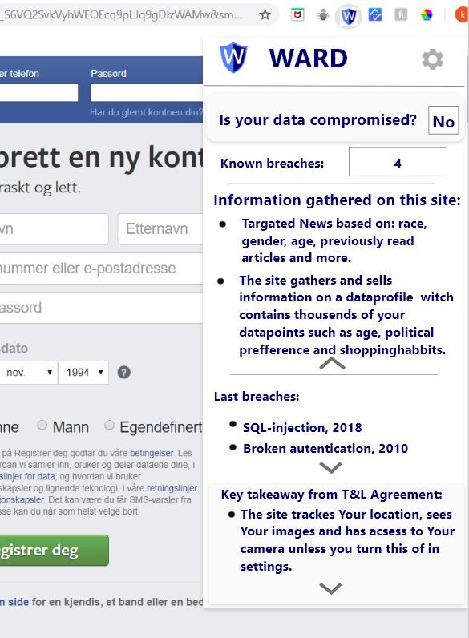
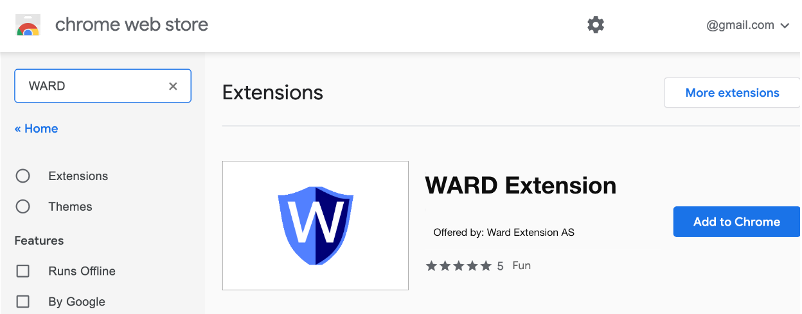

The WARD blog
How to use WARD
November 20, 2019

WARD want the extension to be used by everybody. For example, people with different challenges would use the extension equivalent to everybody else
The WARD extension will be visible in the browser toolbar
Clicking on the button will give you info about several security issues
- YES / NO – Keeps you updated if your emails has been compromised
- Shows relevant breaches on the web site you are currently visiting
- Shows relevant information that´s gathered. This varies with the web page
- Shows relevant previous breaches on the web site
- Shows relevant and auto updates T&L agreements made by the web site / service provider
How to set up WARD
November 10, 2019

- Download the chrome extension at chrome web store
- Click “Add”, then accept the permissions WARD requests
- In this article from lifehacker.com they´re discussing why chrome extensions need permission
Our new survey
November 1, 2019

-
WARD has made a survey to better understand the market we´re digging in to. All the gathered data was higly interesting.
Now we have a clear idea of what the general user thinks about cybersecurity(100+ replies).
Ward have used this data to identify obvious statistical anomalies.
- 80,3% would like to be notified on security breaches
- 65,6% rarly never reads T&L
- 81,2% Struggles to understand T&L
- 84% Would download WARD
Key takeaways from the survey in the figure below:
Sources:
Terms-conditions icon (***) made by monkik from www.flaticon.com
Download icon (****) made by Gregor Cresnar from www.flaticon.com
Book icon (**) made by Good Ware from www.flaticon.com
Notificationbell (*) made by Freepik from www.flaticon.com